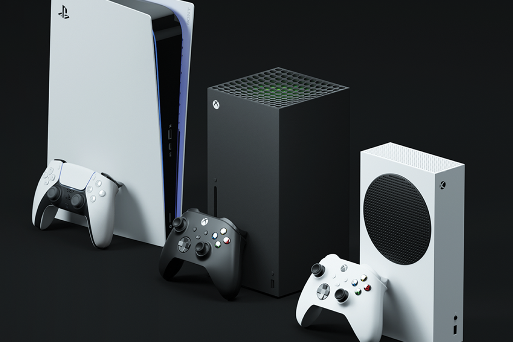

O que há de novo no mundo dos games?
Postado em 23 de agosto de 2023
"Prepare-se para mergulhar nas últimas novidades do universo dos games! 🎮🌟 No TecBlog, estamos sempre antenados com as tendências mais quentes e as inovações que estão moldando o cenário dos jogos eletrônicos. Das mais recentes lançamentos de consoles aos tÃtulos mais aguardados, estamos aqui para manter você atualizado. Junte-se a nós nesta emocionante jornada pelos mundos virtuais que estão mudando a forma como jogamos e nos divertimos. Fique ligado para descobrir o que há de novo no mundo dos games! 🕹️👾 #Games #Inovação #JogosEletrônicos" 🚀🕹️
Leia maisAs novidades dos consoles da nova geração.
Postado em 19 de junho de 2023 "Os consoles da última geração abriram as portas para uma experiência de jogo incrÃvel como nunca antes. Com gráficos de alta qualidade, desempenho impressionante e uma biblioteca de jogos diversificada, essas máquinas revolucionaram a maneira como experimentamos o entretenimento digital. Dos mundos expansivos aos jogos multiplayer envolventes, a última geração de consoles ofereceu algo para todos os tipos de jogadores. No TecBlog, vamos explorar de perto esses consoles e suas contribuições para a indústria dos jogos. Prepare-se para uma viagem pelo melhor que a última geração tem a oferecer! 🎮✨ #Consoles #Jogos #ÚltimaGeração" 🚀🎮
Leia maisOs consoles retrô estão vindo com tudo, trazendo nostalgia aos gamers.
Postado em 10 de maio de 2023"Uma tendência nostálgica está varrendo o mundo dos jogos: os consoles retrôs estão voltando com tudo! 🕹️🎉 Aquelas preciosas relÃquias dos anos passados estão ressurgindo, trazendo de volta a magia dos clássicos para os corações dos jogadores. Com edições em miniatura e tecnologia moderna, esses consoles nos permitem reviver aventuras épicas e compartilhar a diversão com uma nova geração. No TecBlog, vamos explorar essa emocionante revolução retrô e como ela está reunindo fãs de todas as idades em torno de experiências de jogo atemporais. Prepare-se para uma jornada pelo passado que está mais atual do que nunca! 🎮🔙 #ConsolesRetrô #Nostalgia #Clássicos" 🚀🕹️
Leia maisPainel de pensamentos...
Em um mundo em constante evolução, a tecnologia molda o nosso amanhã.
Em um mundo em constante evolução, a tecnologia molda o nosso amanhã.